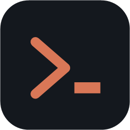
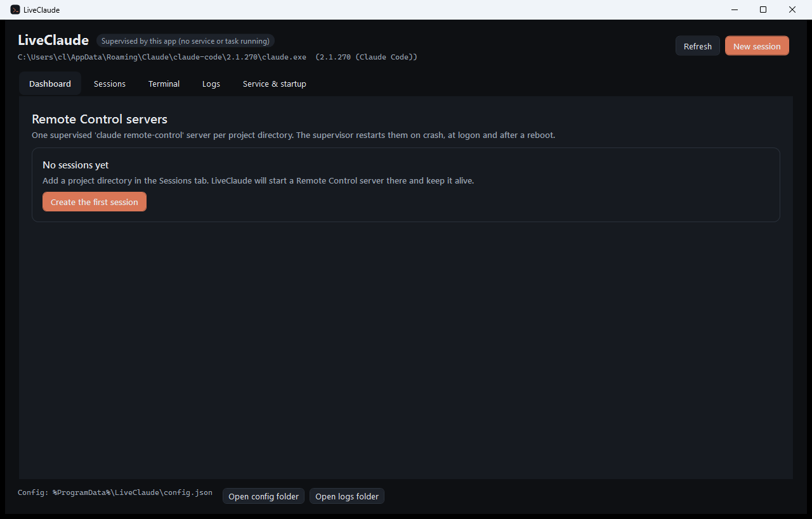
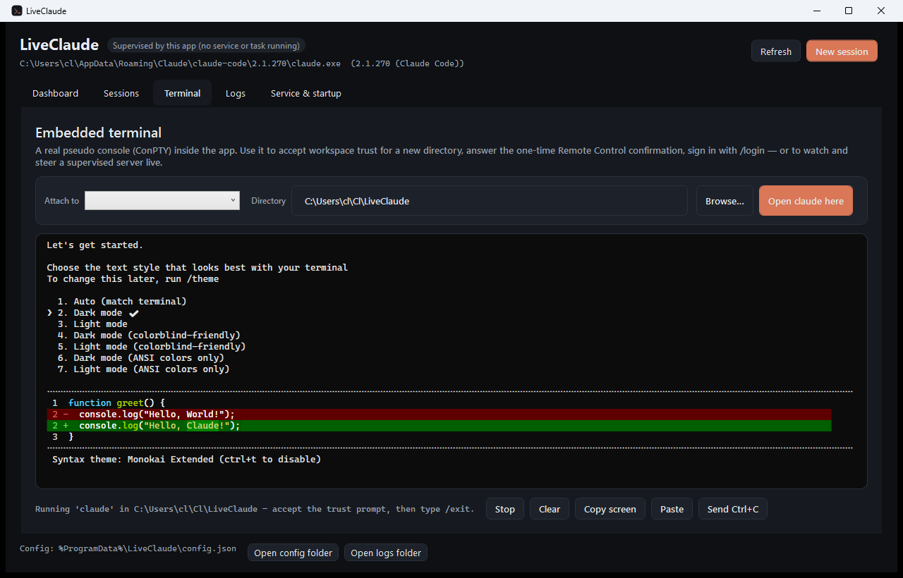

LiveClaudeLiveClaude keeps Claude Code Remote Control servers running on Windows — one per project directory, restarted after a crash, at logon and after a reboot. Plus a desktop app with a real terminal inside it.

Remote Control is a foreground process in a terminal: close the window, hit a crash or reboot the machine and your phone loses the machine. LiveClaude turns it into infrastructure.
Exponential backoff after a crash, a restart budget you choose, and automatic reattachment to the previous session when it is still inside Remote Control's four-hour window.
The task runs in your own session and survives logon and boot. The service starts before sign-in. Both are installed, started and removed from the app.
Spawn mode, permission mode, capacity, worktrees, session-name prefix, fixed session id, sandbox, model, extra arguments — with a live preview of the exact command line.
Workspace trust, the one-time Remote Control confirmation and /login all need a terminal.
There is one in the app — and you can attach to a running server and type into it.
Running, starting, needs attention, backing off, failed. Session URLs one click away, rolling per-instance logs, and a supervisor log for the host itself.
.NET 10 and WPF. ConPTY and the VT emulator are written from scratch — no Node, no web view, no tmux, no native dependencies beyond Win32.

Windows 10 1809+ or Windows 11, and a Claude Code sign-in on a Pro, Max, Team or Enterprise plan.
winget install LeandroCannizzaro.LiveClaude
Installs both liveclaude (the app) and liveclaude-service (the supervisor CLI).
# after extracting the zip
./Install-LiveClaude.ps1 -RegisterTask -Launch
The script copies the files to %LOCALAPPDATA%\Programs\LiveClaude, creates a Start Menu
shortcut and registers the supervisor task. No administrator rights needed. Pick the
-selfcontained zip to skip the .NET runtime prerequisite.
Installs for the current user and checks for updates on every launch.
Launch the ClickOnce installer
Requires the .NET 10 Desktop Runtime.
git clone https://github.com/LeandroCannizzaro/LiveClaude.git cd LiveClaude dotnet build -c Release dotnet run --project src\LiveClaude.App
The supervisor owns one claude remote-control server per directory, each inside its own
pseudo console. The app talks to it over a named pipe, so you can close the window and the servers keep going.
| Step | What happens |
|---|---|
| Add a session | A directory, a name and the flags you want. Saved to %ProgramData%\LiveClaude\config.json,
which the supervisor watches. |
| Trust once | Claude Code asks for workspace trust the first time it runs in a folder, and again for the one-time Remote Control confirmation. Both are answered in the app's terminal tab. |
| Supervise | The server is started windowless in a ConPTY. Output is parsed for the session URL and for the states that need you, and written to a rolling log. |
| Recover | On exit: backoff, restart, and --continue when the previous session can still be
reattached. At logon and after a reboot: the task or the service brings everything back. |
Remote Control's four-hour window. A stopped server's sessions can only be brought back for
about four hours. LiveClaude reattaches while it can and starts a fresh session afterwards — the conversations
themselves stay resumable locally with claude --resume.